DevOps D-Day
Le DEVOPS D-DAY est un événement qui rassemble tous les acteurs du monde de l'IT passionnés par l'écosystème DEVOPS/CLOUD/DOCKER. Vous assisterez à des conférences animées par des speakers de renom.
Détails 15 novembre à 8h à l'Orange Vélodrome (Marseille)SophI.A
Sophia accueillera un congrès international sur l’intelligence artificielle. Au programme: des sessions scientifiques et techniques, des conférences citoyennes, des master classes, un spectacle, des rendez-vous entreprises.
Détails du 7 au 9 novembre 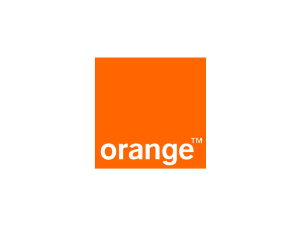
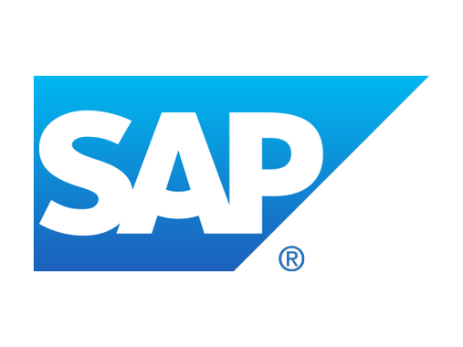
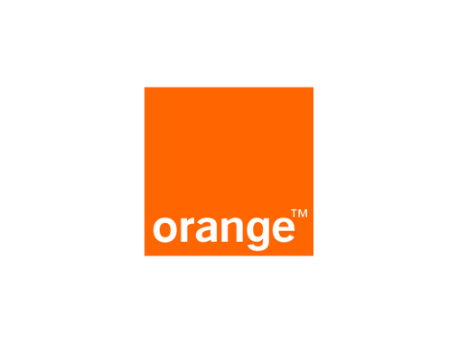
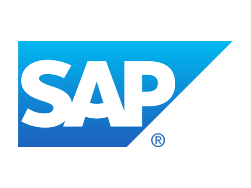
 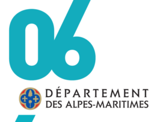
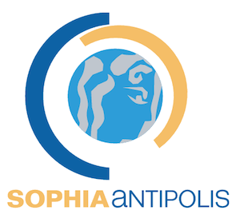
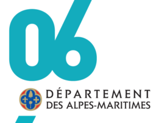
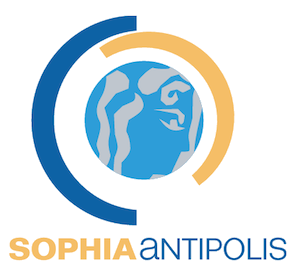
Nice WordCamp
Un ensemble de conférences dédiées à WordPress
Détails 19 octobre à 8H30 à l'ISEM (Nice)M-Tourism Day 2018
La commission m-Tourisme a le plaisir de vous annoncer la 8ème journée m-Tourisme. Au programme: l'utilisation de l'Intelligence Artificielle pour le tourisme
Détails 16 octobreSophia Security Camp
Participez à une demi-journée de hacking lab et une conférence sur la sécurisation des données de votre entreprise.
9 octobre
Blockfest 1.5 by WHAT06
Les collectifs WHAT06 & Le BlockFest vous feront découvrir la technologie de la blockchain et comprendre son utilité dans divers domaines d’applications (Santé, ONG, RGPD…).
Détails 22 septembre à 9h au Village By CA 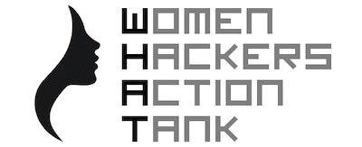 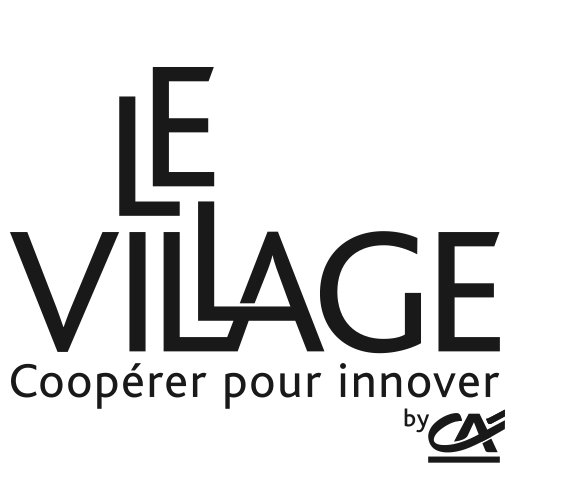Agile Tour 2018
L'Agile Tour est une série de conférences mondiales dédiées au développement agile. En 2017, c'était 93 dates dont 17 en France. L'étape sophipolitaine organisée par un collectif d’entreprises, d’agilistes et l’association Telecom Valley, va célébrer sa 8ème édition.
Détails 21 septembre à 9hLinux : discussions sur la limite entre noyau et espace utilisateur
Hervé Nicol de GFI vous parlera du noyau Linux et développera des exemples avec BPF et FUSE
20 septembre à 12hRivieraJug : soirée releases et perfs JVM
Le Riviera JUG fait sa rentrée sur les chapeaux de roues et organise une rencontre avec Gil Tene, co-fondateur d'Azul Systems et co-créateur de la JVM Zing (entre plein d'autres), en personne !
Détails 13 septembre à 18h à l'Inria 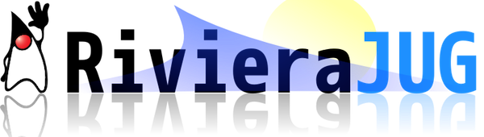Sophia Live Music
Venez assister à 2 soirées de live, super ambiance garantie !
Détails 13-14 septembre, Pinède Mercure-IbisLe Go?! On commence par où?
Le but est de se retrouver entre programmeurs expérimentés mais ne connaissant pas encore le Go.
Détails 12 septembre à 19h 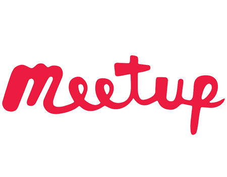Cas d'usages Terraform et Nomad
Présentation de Apache Heron et déploiement avec Nomad par Thomas Sarboni. Terraform en action et cas d'usage concret OpenStack par Romain Di Santo
Détails 6 septembre à 18h30Développement Mobile Côte-d'Azur
Olivier TOSELLO, viendra nous parler de AWS et notre appli mobile. Michael Lopez et Stephane Martarello: Dimensionnement d'images à la volée avec AWS Lambda
Détails 5 septembre à 18h30SophiaConf édition 2018
3 soirées de talks et une journée entièrement dédiée à des workshops techniques. Au programme cette année: AI, DevOps et Cloud, IoT. Les CFPs sont ouverts !
Détails Du 2 au 5 juillet 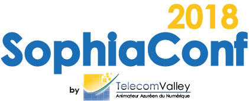Développement Mobile Côte-d'Azur & Docker Nice
Au programme 2 présentations pour vous montrer comment docker peux vous aidez a créer vos applications mobiles: "Docker, react native et expo par Franck Marin", "Jenkins - Docker & Android par Olivier Tosello"
Détails 28 juin à 18h30Etude de cas: déploiement continu par Sébastien Dagnicourt
D'un environnement pseudo automatisé vers un déploiement continu avec des outils comme Ansible, Gitlab, Docker, ...
Détails 06 juin à 12hMeetup Docker - Security
Let's talk about container security with Treeptik and NeuVector
Détails le 29 mai à 18h00 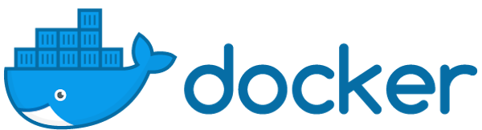Startup Week-End Nice Sophia-Antipolis
Crée la boite de tes rêves en un weekend
Détails à partir du 18 mai à 18h30RivieraDev édition 2018
Riviera DEV c'est 3 jours de conférences et d'ateliers sur un large panel de sujets : langages de programmation, Front-end & UX, Mobile & IoT, Big Data & Machine Learning, Containers & DevOps, Performance, Agilité ...
Détails Du 16 au 18 mai 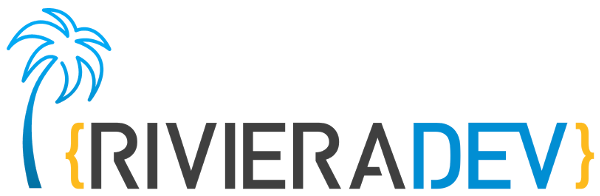LadiesAInight - workshop Intelligence Artificielle
WHAT06 vous convie à une soirée sur l'AI le 14 mai. Réservé en priorité aux femmes travaillant dans les milieux techniques de la Côte d'Azur, cet évènement sera animé par Julien Simon, Principal Evangelist ML/AI chez Amazon Web Services. Il fera une introduction au Deep Learning sous la forme d'un workshop.
Détails 14 mai à 17h30I/O Extended 2018 Nice
Comme chaque année à cette période de l'année, Google organise la Google I/O, 2 jours de conférence à destination des développeurs organisés à San Francisco...
Détails le 8 mai à 18h45Sophia CNCF #2
2 talks by Cédric Lamorinière and David Benque: Kubernetes Extensions + Pod Anomaly Detection
Détails 20 avril à 17h30 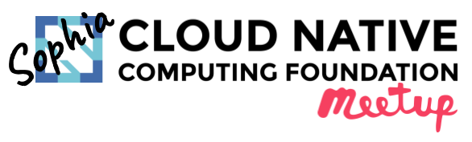Cloud Study Jam - Edition Nice
Venez découvrir la Google Cloud Platform et Docker en participant à notre Cloud Study Jam organisée conjointement par le Docker Nice Meetup et le Google Developer Group Nice qui vous proposent d'y participer à Nice ou à Sophia-Antipolis au choix et en simultané
Détails 17 avril à 18h00Cloud Study Jam - Edition Sophia-Antipolis
Venez découvrir la Google Cloud Platform et Docker en participant à notre Cloud Study Jam organisée conjointement par le Docker Nice Meetup et le Google Developer Group Nice qui vous proposent d'y participer à Nice ou à Sophia-Antipolis au choix et en simultané
Détails 17 avril à 18h00Présentation de GitLab par Rémy Coutable
La vérité sur l’affaire GitLab ! Plongez avec moi dans cette mystérieuse affaire GitLab dont on parle tant. Je vous emmènerai dans les coulisses de la machine infernale qui sort une nouvelle version tous les 22 du mois. JIRA, Trello, Travis, GitHub, Docker Hub, oubliez tout ça, GitLab sait tout faire !
Détails 12 avril à 12hOpen GFI - Le serverless avec AWS
Nous accueillerons Rémi Retureau, architecte chez Amazon, pour nous présenter les services Amazon via une démonstration d'une chaîne d'intégration et de déploiement continu. Ce sera l'occasion de parler de "Serverless".
Détails 6 avril à 18h00Développement Mobile Côte-d'Azur
#22 - Présentation de Macha Da Costa: Il y a bientôt un an, Google a officialisé le support du langage Kotlin pour le développement d’application mobile Android, à la G I/O (17-19 mai 2017). Ceci étant, pourquoi Kotlin ? Quels nouveaux concepts apporte ce langage de programmation orientée objet et fonctionnelle ? Quel est l’intérêt d'utiliser ce nouveau langage par rapport au Java ? Quels sont ses limitations et peuvent-elles nuire à son adoption ? Autant de questions auxquelles cette présentation tentera de répondre.
Détails 29 mars à 12hCelebrate the Docker 5th Birthday
Une nouvelle fois, venez célébrer avec nous l'anniversaire de Docker. Au programme: labs, présentations, gateaux, et du fun... :)
Détails 22 mars à 17h30Soirée Kafka
Florent Ramière viendra présenter à quoi sert Kafka et comment l'utiliser
Détails 20 mars à 18hProgrammation fonctionnelle
Introduction à la programmation fonctionnelle par Yann Esposito. Attention, Haskell au programme...
Détails 15 mars à 12hEspace RSSI par CLUSIR côte d'azur
Le PIA : clé de voûte de votre conformité RGPD, par Edmond Cissé, Uraeus Consult. Exigence de l’article 35 du règlement, l’étude d’impact sur la vie privée (PIA: Privacy Impact Assessment) doit être menée pour tout projet susceptible d’engendrer des risques de sécurité élevés sur la vie privée des personnes. (...)
Détails 12 mars à 18h30Google Hash Code @Epitech Nice
Comme tous les ans, Google organise le Hash Code, une compétition de programmation en équipe pour résoudre un problème d’ingénierie de la vie réelle de Google
Détails 1er mars à 18hGoogle Hashcode @Polytech Nice-Sophia
Hash Code is a team programming competition organized by Google for students and industry professionals across Europe, the Middle East and Africa. You pick your team and programming language, Google picks an engineering problem for you to solve
Détails 1er mars à 18hDéveloppement Mobile Côte-d'Azur
#21: Adopter la programmation réactive par Florent Pillet, présentation de Marvel App par Gregory Biondo
Détails 21 février à 18h30Tech Workshop Blockchain
Raed Chamman (Softeam) vous permettra d'approfondir et de mettre en application les smart contracts sur Ethereum lors d'une session Workshop
Détails 21 février à 17h30Gestion d'un projet open source
Présentation de Open Source Business Diagnostic par Jaime Arredondo (BoldAndOpen.com)
Détails 20 février à 12hSoirée blockchain
Parce que les blockchains sont au coeur de l’actualité et suscitent beaucoup de curiosité, la communauté Open Source vous propose une double soirée TechEvent dédiée à ce thème.
Détails 15 février à 18hGarage IBM Cloud
Découvrez le Garage IBM Cloud et les concepts UX à Nice Meridia au CEEI
Détails 09 février de 14h à 16hPrésentation de Hazelcast
Neil Stevenson présentera la base de données Hazelcast
Détails 06 février à 18hSécurité des applications cloud native
Cloud, virtualisation, microservices, conteneurs… quelles sont les bonnes pratiques de sécurité ? par Serge HARTMANN de ACP Qualife
Détails 06 février à 12h
Sophia CNCF #1
Cédric Lamorinière et David Benque vous présenterons Prometheus une solution de monitoring pour le système et les applications
Détails 29 janvier à 17h30Kafka par GreenCom Network
Retour d'expérience sur l'utilisation de Kafka par Sébastien Alegret de GreenCom Network
Détails 25 janvier à 12hHashicorp User Group #2
Thomas Sarboni fera une introduction à Terraform, David Calvert nous présentera Vault
Détails 23 janvier à 18hMeetup Docker / RivieraJug
Anthony Lapenna viendra nous présenter Portainer pour gérez vos environnements Docker en toute simplicité
Détails 18 janvier à 18h